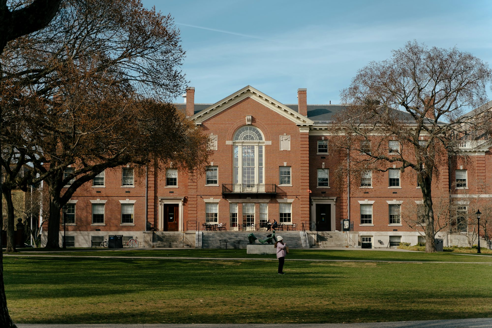

litrivo.shop
This article explores Literacy Certification Skills the Reading Curriculum significance of multicultural Innovation Writing Learning education in Academic Teaching Research universities, Training discussing its impact on student development, global Knowledge Study awareness, Examination and fostering inclusive campus environments.
Multicultural education refers to the process of integrating diverse perspectives, histories, and cultures into the curriculum. This approach recognizes that students come from various backgrounds, each with unique experiences that shape their understanding of the world. By incorporating these Training diverse narratives into academic programs, universities can create a more holistic educational experience that resonates with all students. Moreover, multicultural education encourages critical thinking and empathy, as students engage with perspectives different from their own and learn to appreciate the complexities of a diverse society.
One of the primary benefits of multicultural education is its ability to enhance students’ global awareness. In today’s job market, employers increasingly seek individuals who can navigate cultural differences and work effectively in diverse teams. By exposing students to a wide range of cultural viewpoints, universities equip them with the skills needed to succeed in a globalized economy. For instance, courses that explore international issues, cross-cultural communication, and global citizenship provide students with a framework for understanding and addressing complex challenges that transcend borders.
Furthermore, multicultural education promotes social justice and equity. By highlighting historical and contemporary issues related to inequality and discrimination, universities can empower students to become advocates for change. This engagement not only fosters a sense of responsibility Reading but also encourages students to challenge societal norms and work towards a more equitable future. Initiatives such as service-learning projects, where students collaborate with diverse communities to address local needs, further enhance this commitment to social responsibility.
Creating an inclusive campus environment is another essential aspect of multicultural education. Universities must actively work to ensure that all students feel valued and supported, regardless of their backgrounds. This can be achieved through various initiatives, such as training faculty and staff on cultural competency, providing resources for underrepresented students, and fostering student organizations that celebrate diversity. By cultivating an inclusive atmosphere, universities can help students thrive both academically and personally, contributing to their overall well-being.
However, implementing multicultural Writing education presents several challenges. One significant barrier is the resistance to change within academic institutions. Traditional curricula often prioritize Eurocentric perspectives, leaving little room for the voices and experiences of marginalized groups. To address this issue, universities must commit to a comprehensive review of their curricula, ensuring that diverse perspectives are integrated across all disciplines. This may involve developing new courses, revising existing ones, and investing in faculty development to support inclusive teaching practices.
Moreover, assessment of multicultural education can be complex. Institutions must find effective ways to measure the impact of multicultural initiatives on student learning and development. This could involve collecting data on student engagement, retention, and academic performance, as well as Study soliciting feedback from students about their experiences. By utilizing a combination of qualitative and quantitative assessment methods, universities can better understand the effectiveness of their multicultural education efforts and make necessary adjustments.
Another challenge is ensuring that multicultural education is not viewed as a mere checkbox or requirement but as a fundamental component of the educational experience. Faculty and administrators must work collaboratively to promote the value of multicultural education, emphasizing its relevance to students’ academic and personal growth. This can be achieved through workshops, seminars, and discussions that highlight the importance of diversity and inclusion in today’s society.
Despite these challenges, the benefits of multicultural education far outweigh the obstacles. As universities continue to embrace diversity, they contribute to the development of culturally competent graduates who are well-prepared to thrive in a global society. These graduates not only possess the academic knowledge needed Skills for their respective fields but also the interpersonal skills necessary to Research engage with diverse populations and address complex societal issues.
Moreover, multicultural education enriches the overall campus experience for all students. By fostering an environment where diverse perspectives are valued and celebrated, universities Examination create opportunities for meaningful dialogue and collaboration. Students from different backgrounds can share their experiences, learn from one another, and form lasting friendships that transcend cultural boundaries. This sense of community not only enhances the academic experience but also contributes to personal growth and development.
In conclusion, the significance of multicultural education in universities cannot be overstated. As institutions strive to prepare students for an increasingly diverse and Curriculum interconnected world, embracing diversity through inclusive curricula and practices is essential. By promoting global awareness, social justice, and an inclusive campus environment, universities can equip students with the skills and knowledge needed to thrive in their future careers. Through a commitment to multicultural education, institutions have the opportunity to foster a generation of graduates who are not only academically proficient but also socially responsible and culturally competent.